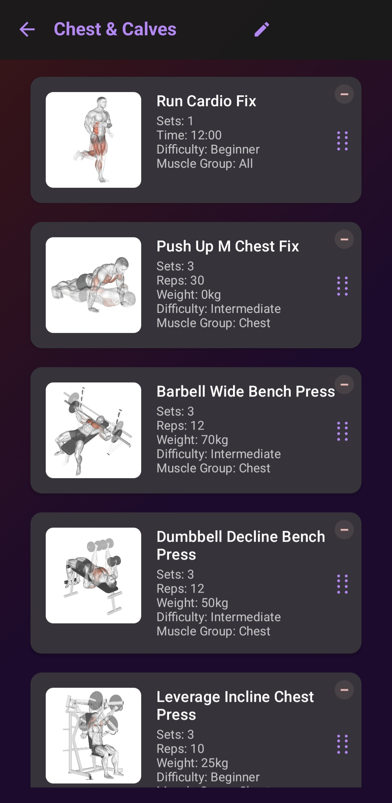
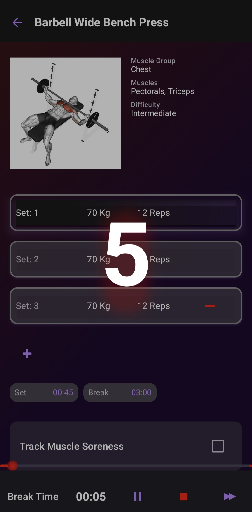
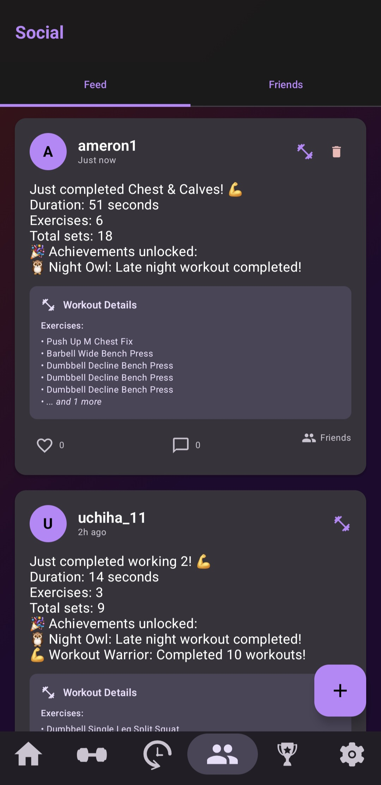
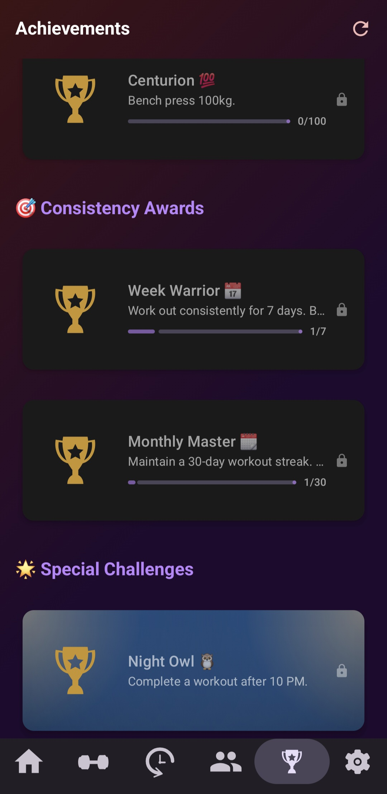

GymTracker – Social Fitness & Workout Tracker App
GymTracker is a modern Android application designed to help users plan, track, and share their fitness journey. The app combines robust workout management with a vibrant social feed, making it easy to stay motivated and connected with friends.
Key Features
- Workout Management: Create, customize, and organize workouts with detailed exercise cards (including sets, reps, weights, time, difficulty, and muscle groups). Visual exercise previews with muscle diagrams and GIFs for better guidance. Edit, reorder, or remove exercises from any workout.
- Social Feed: Share workout achievements and completed sessions with friends in a dedicated social tab. View a real-time feed of friends’ activities, including workout summaries, durations, and unlocked achievements. Like, comment, and interact with posts to foster community motivation.
- Achievements & Gamification: Unlock achievements for workout milestones, consistency, and special challenges. Achievements are highlighted in the feed, encouraging friendly competition and personal progress.
- Friends & Invitations: Add friends, accept or decline invitations, and manage your fitness network. See pending friend requests and connect with new workout partners.
- Modern UI/UX: Clean, dark-themed interface with intuitive navigation. Floating action buttons for quick actions (e.g., adding posts). Responsive layouts and visually distinct sections for workouts, feed, and friends.
- Navigation: Bottom navigation bar for seamless access to all major sections: Home, Workouts, Social Feed, Achievements, and Settings.
Tech Stack
- Kotlin & Jetpack Compose for modern, declarative UI development.
- Room Database for local data persistence.
- MVVM Architecture for scalable, maintainable code.
- Coil for efficient image loading.
- Material Design 3 for a polished, accessible user experience.
GymTracker is ideal for anyone looking to combine structured workout planning with the motivational power of social fitness. The app’s blend of tracking, sharing, and community features makes it a standout project for both users and developers.
Screenshots



